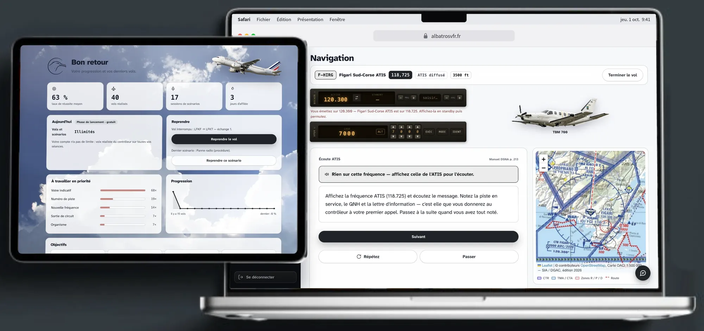
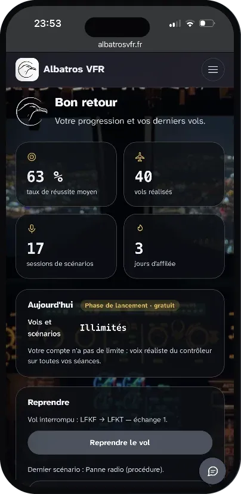

Maîtrisez la radio comme un vrai pilote.
Créé par un élève pilote, Albatros VFR est né d'un constat simple : à la radio, on progresse en parlant. Ici, vous répétez chaque échange autant de fois qu'il le faut — du roulage à l'atterrissage, jusqu'à la panne moteur ou radio.
- aérodromes français
- 387
- types d'appareils
- 176
- scénarios complets
- 13
- imprévus en vol
- 43
Prenez confiance à la radio
Entraînez-vous autant que nécessaire avant votre prochain vol. Vous arrivez plus à l'aise sur la fréquence.
Soyez plus à l'aise en vol
Répétez les situations que vous pouvez rencontrer en vol pour être plus à l'aise quand elles arrivent vraiment.
Apprenez de vos erreurs
Voyez rapidement ce qui n'allait pas dans vos messages et comprenez ce qu'il faut améliorer.
Gagnez en réactivité
Apprenez à écouter, réfléchir et répondre rapidement sans avoir besoin de préparer chaque phrase à l'avance.
Améliorez votre phraséologie
Entraînez-vous à utiliser les bons mots et les bonnes formulations pour vos communications radio.
Suivez votre progression
Voyez vos résultats au fil des exercices et identifiez les points sur lesquels vous devez encore travailler.
Et si quelque chose tournait mal ?
Pendant un vol, tout ne se passe pas toujours comme prévu. Avec Albatros VFR, des pannes et situations inhabituelles peuvent survenir en cours d'exercice et vous obliger à réagir.
Chaque situation vous demande de réfléchir, de vous adapter et de prendre les bonnes décisions.
À vous de gérer la situation
Une panne peut apparaître pendant votre vol. Vous devez identifier le problème, évaluer la situation, prendre une décision et adapter votre communication avec le contrôle.
Albatros ne vous donne pas automatiquement la réponse : vous devez gérer la situation comme vous le feriez en vol.
- 1Identifier le problème
- 2Évaluer la situation
- 3Prendre une décision
- 4Communiquer avec le contrôle
- Altitude
- 2 500 ft
- Moteur
- 0 tr/min
- Transpondeur
- 70007700
MAYDAY MAYDAY MAYDAY, Chartres-Métropole tour, F-BYFO, panne moteur, je me pose, verticale terrain, 2 500 pieds.
F-BYFO, Mayday Roger, transpondeur 7700.
Transpondeur 7700, F-BYFO.
Chaque panne est une nouvelle situation à gérer.
Entraînez-vous à rester calme, prendre les bonnes décisions et communiquer efficacement, même lorsque le vol ne se déroule pas comme prévu.


Entraînez-vous où vous voulez
Albatros VFR est accessible depuis votre ordinateur, votre tablette ou votre téléphone.
Continuez votre entraînement où que vous soyez, sans être limité à un seul appareil.
-
OrdinateurPour des sessions d'entraînement complètes
-
TabletteUne expérience confortable et immersive
-
MobilePour vous entraîner où que vous soyez
Commencez gratuitement
Albatros VFR est gratuit pendant la phase de lancement. Créez votre compte et faites votre premier vol en quelques minutes.
- Aucune carte bancaire demandée
- Tous les exercices accessibles
- Chaque jour, 3 vols et 5 scénarios avec la voix réaliste du contrôleur
Ensuite, jusqu'à 10 vols et 15 scénarios par jour avec la voix de votre navigateur. Les compteurs repartent à zéro à minuit.
Ce qu'en disent les élèves.
Les questions qu'on nous pose.
Il me faut quoi ?
Est-ce que ça remplace mon instructeur ?
Je n'ose pas parler à la radio.
D'où viennent les phrases ?
Et si le micro me comprend mal ?
Mes données ?
Se connecter
Accédez à vos exercices de phraséologie.
Pas encore de compte ?
Nous enverrons un code à usage unique à l'adresse saisie ci-dessus.
Simulation — première connexion rejouée depuis l'administration. Rien n'est enregistré.
- 1Adresse
- 2Code
- 3Mot de passe
- 4Vous
- 5Identité
Créer un compte
On commence par votre adresse. Nous vous y enverrons un code à huit chiffres.
Conditions d'utilisation Politique de confidentialité Mentions légales
Déjà un compte ?
Confirmez votre adresse
Nous avons envoyé un code à huit chiffres à . Il est valable une heure.
Pensez à vérifier vos spams. Le message arrive souvent dans le dossier « Indésirables » ou « Spam ».
Votre message ne contient pas de code, seulement un lien ? Copiez ce lien et collez-le dans le champ ci-dessus : il fait la même chose. Depuis un fichier ouvert en local, c'est même la seule façon d'aboutir — un lien ne peut pas ramener ici.
Rien reçu ? Regardez vos indésirables, puis
.
Choisissez un mot de passe
Votre adresse est confirmée. Il ne reste qu'à protéger le compte.
Parlez-nous de vous
Quelques questions, pour adapter les exercices à votre niveau. Une minute, pas plus.
Presque fini
Votre nom d'utilisateur vous identifie dans l'application. Il est unique.
3 à 20 caractères : minuscules, chiffres, tiret ou souligné.
Il sert à vous proposer les fréquences et les exercices de votre terrain.
Les avis des élèves
Laissés par des élèves inscrits, et relus un par un avant d'être publiés.
Mentions légales
Version 1.0 — dernière modification le 3 octobre 2026.
Albatros VFR est édité à titre personnel, par un particulier. Le jour où l'offre Premium payante ouvrira, l'activité deviendra professionnelle et cette page sera complétée en conséquence (adresse de l'éditeur, numéro d'immatriculation) : l'anonymat du § 1 n'est ouvert qu'aux éditeurs non professionnels.
1. Éditeur du service
- Éditeur — Adrien Kermel
- Statut — particulier, éditeur non professionnel
- Adresse — non publiée : l'éditeur, personne physique agissant à titre non professionnel, a communiqué ses coordonnées à l'hébergeur du site (§ 2), comme le permet l'article 6-III-2 de la loi pour la confiance dans l'économie numérique (LCEN).
- Adresse de contact — contact@albatrosvfr.fr
- Directeur de la publication — Adrien Kermel
- Site — https://albatrosvfr.fr/
Un éditeur non professionnel peut, au titre de l'article 6-III-2 de la LCEN, ne pas rendre publique son adresse, à condition de l'avoir communiquée à son hébergeur et de publier l'identité de celui-ci — elle figure au § 2. Un éditeur professionnel, ou dès qu'une formule payante existe, doit en revanche tout publier.
2. Hébergement
Le service repose sur deux hébergeurs distincts, qui ne détiennent pas les mêmes choses.
| Hébergeur | Ce qu'il héberge |
|---|---|
| Cloudflare, Inc. (service Cloudflare Workers) 101 Townsend Street, San Francisco, CA 94107, États-Unis cloudflare.com |
Les fichiers du site : pages, styles, scripts, images et tuiles de carte. Aucune donnée de compte. En servant ces fichiers, Cloudflare voit nécessairement votre adresse IP. |
| Supabase, Inc. supabase.com Projet vbziwjeuzcbvrbrihhrg |
Les comptes (adresse e-mail, empreinte du mot de passe), les profils et les séances d'entraînement. Autrement dit : tout ce qui vous concerne. |
Région d'hébergement de la base : Union européenne — Irlande (région eu-west-1 d'Amazon Web Services, sur laquelle Supabase fait tourner le projet). Vos données de compte et vos séances sont donc stockées dans l'Union européenne. Supabase, Inc. reste une société établie aux États-Unis : voir la politique de confidentialité, § 6.
3. Propriété intellectuelle et sources
Le code et les textes d'Albatros VFR sont l'œuvre de son éditeur. Les données et les contenus repris de tiers restent la propriété de leurs auteurs, aux conditions suivantes.
- Phraséologie — les exercices sont bâtis sur le Manuel de phraséologie publié par la DSNA, document public. Il reste la seule référence ; ce site n'en est qu'un support d'entraînement.
- Aérodromes et fréquences — OurAirports, domaine public.
- Espaces aériens — SIA / DGAC via data.gouv.fr, Licence Ouverte 2.0. Conversion communautaire du 11 mars 2020 : non officielle et non à jour.
- Fond OpenStreetMap — © les contributeurs OpenStreetMap, licence ODbL.
- Carte OACI 1:500 000 — Service de l'Information Aéronautique (SIA), édition 2026 en vigueur le 16 avril 2026. Données originales téléchargées sur sia.aviation-civile.gouv.fr, réutilisées sous la Licence Ouverte du SIA, découpées en tuiles pour l'affichage à l'écran. Cette réutilisation n'a aucun caractère officiel et n'est ni reconnue ni cautionnée par le SIA ; seules les cartes publiées par le SIA font foi pour la préparation d'un vol.
- Bibliothèque cartographique — Leaflet, licence BSD 2-clauses.
- Photographies — créditées en pied de page (Unsplash, Pixabay).
4. Signalement d'un contenu
Toute personne peut signaler un contenu qu'elle estime illicite à l'adresse de contact du § 1. Les signalements relatifs à une erreur de phraséologie ou de fréquence sont particulièrement bienvenus : une information périmée sur ce site est un risque, pas une imperfection.
Conditions d'utilisation
Version 1.0 — dernière modification le 3 octobre 2026.
Ce texte vous engage dès que vous cochez la case à l'inscription. La version acceptée est enregistrée avec votre compte ; si le texte change sur le fond, nous vous en informerons et vous demanderons à nouveau votre accord.
1. Objet
Albatros VFR est un service d'entraînement à la phraséologie radiotéléphonique française pour le vol à vue. Il s'adresse aux élèves pilotes, aux pilotes brevetés qui veulent se remettre en état, et à quiconque s'intéresse aux communications air-sol.
Les exercices se font à la voix : vous parlez au microphone, la reconnaissance vocale de votre navigateur transcrit ce que vous avez dit, et le service compare cette transcription à la phraséologie attendue. Le contrôleur vous répond par une voix de synthèse. La transcription peut se tromper ; vous pouvez la corriger avant de la valider, et tous les exercices peuvent se faire au clavier, sans microphone.
Le service est gratuit, dans les limites quotidiennes affichées dans l'application. Une offre payante, Albatros VFR Premium, est en préparation : ses conditions sont au § 13. Tant qu'elle n'est pas ouverte, aucun paiement n'est possible et aucune carte bancaire n'est demandée.
2. Qui édite le service
Albatros VFR est édité par Adrien Kermel, à titre personnel. Contact : contact@albatrosvfr.fr. Les informations complètes figurent aux .
3. Ce qu'Albatros VFR n'est pas — à lire en entier
Albatros VFR est un outil d'entraînement. Ce n'est pas une référence
opérationnelle, et aucune décision de vol ne doit être prise sur la foi de ce site.
Il ne remplace ni votre instructeur, ni le Manuel de phraséologie de la DSNA, ni les
cartes VFR, ni les documents d'information aéronautique en vigueur. Les fréquences, les
procédures, les terrains, les espaces aériens et les cartes qui y figurent peuvent être
périmés, incomplets ou erronés : certaines données proviennent de conversions
communautaires non officielles, et aucune n'est mise à jour au rythme de l'information
aéronautique. Avant un vol, la seule source valable est la documentation officielle en
vigueur.
Réussir un exercice ici n'atteste d'aucune compétence, ne vaut aucune qualification et ne
prépare pas à lui seul à un examen.
4. Compte et âge minimum
- 15 ans révolus. C'est l'âge à partir duquel, en France, on peut consentir seul au traitement de ses données personnelles (article 8 du RGPD et article 45 de la loi Informatique et Libertés). En dessous, l'accord d'un représentant légal serait nécessaire, et le service n'a aujourd'hui aucun moyen de le recueillir : l'inscription vous est donc fermée. À l'inscription, vous déclarez avoir 15 ans — cette déclaration est enregistrée, elle n'est pas vérifiée.
- Un compte par personne. Le nom d'utilisateur est unique et ne peut pas être repris.
- Des informations exactes. Votre adresse e-mail doit être la vôtre et fonctionner : c'est le seul moyen de récupérer l'accès au compte.
- Votre mot de passe vous appartient. Ne le communiquez à personne, y compris à quelqu'un se présentant comme l'éditeur : le service ne vous le demandera jamais, et personne de son côté ne peut le lire.
- Pas de partage de compte. La progression enregistrée est celle d'une personne ; un compte partagé n'entraîne personne correctement.
5. Usages interdits
- Tenter d'accéder aux données d'un autre utilisateur, ou à la console d'administration sans en avoir le rôle.
- Chercher à contourner l'authentification, les limites d'usage ou les politiques d'accès de la base.
- Extraire massivement les contenus ou les données par des moyens automatisés.
- Perturber le service ou son hébergement, notamment par un volume anormal de requêtes.
- Reproduire ou rediffuser les contenus au-delà de ce que permettent les licences citées aux mentions légales.
6. Disponibilité
Le service est fourni en l'état, sans engagement de disponibilité. Il peut être interrompu, modifié, restreint ou arrêté, à tout moment et sans préavis — notamment pour maintenance, en cas de défaillance d'un hébergeur, ou si l'éditeur décide d'y mettre fin. Une partie des fonctions dépend en outre de votre navigateur : le microphone et la voix de synthèse ne sont pas fournis par ce site, et certains navigateurs en sont dépourvus.
7. Vos données personnelles
Ce qui est collecté, pourquoi, pour combien de temps, et par qui c'est hébergé : tout est détaillé dans la , qui fait partie de ce contrat.
8. Propriété intellectuelle
Le code et les textes du service sont protégés. Votre compte vous donne le droit d'utiliser le service pour votre propre entraînement, et rien de plus : aucune cession de droits ne vous est consentie. Les contenus tiers (phraséologie DSNA, données aéronautiques, cartes, photographies) restent soumis à leurs licences propres, énumérées aux mentions légales.
9. Responsabilité
L'éditeur n'est pas responsable des conséquences d'une utilisation du service contraire au § 3, ni de l'indisponibilité d'un hébergeur ou d'une fonction du navigateur, ni d'une perte de données résultant de la fermeture de votre compte à votre demande. Il ne répond pas non plus des contenus des sites tiers vers lesquels des liens sont faits.
En revanche — et parce qu'une clause qui prétendrait le contraire serait nulle en droit français — rien ici n'exclut la responsabilité de l'éditeur en cas de faute lourde ou dolosive, ni d'atteinte à l'intégrité physique d'une personne, ni ne prive un consommateur des droits que la loi lui reconnaît.
10. Fermeture du compte
- À votre initiative — écrivez à l'adresse de contact. Le compte et les séances associées sont supprimés. Avant de demander la fermeture, pensez à exporter vos données depuis la page Paramètres : la suppression est définitive.
- À l'initiative de l'éditeur — en cas de manquement au § 5, l'accès peut être suspendu, puis le compte fermé. Sauf urgence ou obligation légale, un avertissement est adressé d'abord. L'adresse e-mail d'un compte fermé pour ce motif peut être empêchée de créer un nouveau compte pendant 3 ans (voir la politique de confidentialité, « Adresse bloquée »).
- Si le service s'arrête — un préavis raisonnable sera donné aux comptes actifs, afin que chacun puisse exporter ses données.
11. Modification de ce texte
Ce texte peut évoluer. La version que vous avez acceptée est enregistrée avec votre compte, avec sa date. Une modification portant sur le fond — ce qui est collecté, ce qui vous est interdit, la responsabilité — vous sera signalée, et votre accord vous sera demandé à nouveau avant qu'elle ne s'applique à vous. Les corrections de forme ne donnent pas lieu à une nouvelle demande.
12. Droit applicable
Ce contrat est régi par le droit français. En cas de différend, une solution amiable sera recherchée d'abord, par écrit à l'adresse de contact. À défaut, les tribunaux français sont compétents ; si vous êtes consommateur, vous conservez le droit de saisir la juridiction de votre domicile.
Le service étant gratuit à ce jour, aucun médiateur de la consommation n'est désigné. Avant l'ouverture de l'offre Premium, un médiateur sera désigné, comme l'exige l'article L.612-1 du code de la consommation, et ses coordonnées figureront au § 13.
13. Albatros VFR Premium
Cette offre n'est pas encore ouverte. Les conditions ci-dessous s'appliqueront à son ouverture ; d'ici là, aucun paiement n'est possible.
- Ce qu'elle comprend. La voix réaliste du contrôleur sur tous vos exercices, et aucune limite quotidienne au nombre de vols et de scénarios. Un plafond journalier de synthèse vocale protège le service : s'il est atteint, la voix de votre navigateur prend le relais jusqu'au lendemain. Les exercices restent les mêmes qu'en offre gratuite.
- Prix. 17,99 €, prix total, payé en une seule fois.
- Durée. Trois mois à compter du paiement : l'accès se termine le même jour, trois mois plus tard, à 23 h 59 (heure de Paris). Un nouvel achat pendant un accès Premium en cours le prolonge de trois mois à partir de sa date de fin.
- Pas d'abonnement. Aucun renouvellement automatique, aucun prélèvement ultérieur. À la fin des trois mois, votre compte repasse en offre gratuite ; vos données et votre progression sont conservées.
- Paiement. Le paiement est traité par Stripe. Vos coordonnées bancaires sont saisies sur la page de paiement de Stripe : elles ne transitent pas par ce site et l'éditeur n'y a jamais accès.
- Droit de rétractation. Vous disposez de 14 jours à compter de l'achat pour vous rétracter, sans avoir à vous justifier (article L.221-18 du code de la consommation). Au paiement, il vous sera demandé si vous voulez que l'accès Premium commence immédiatement. Si vous l'acceptez puis vous rétractez dans ce délai, vous êtes remboursé du prix, déduction faite de la part correspondant à la période déjà écoulée (article L.221-25). Le remboursement est fait dans les 14 jours, par le même moyen de paiement (article L.221-24). Pour vous rétracter, écrivez à contact@albatrosvfr.fr : une déclaration claire suffit, ou le formulaire ci-dessous.
- Médiateur de la consommation. à désigner avant l'ouverture de l'offre.
Formulaire de rétractation (modèle de l'annexe à l'article R.221-1
du code de la consommation) — à envoyer à Adrien Kermel, contact@albatrosvfr.fr :
« Je vous notifie par la présente ma rétractation du contrat portant sur la prestation de
services ci-dessous : Albatros VFR Premium. Commandé le : … Nom du consommateur : … Adresse du
consommateur : … Date : … »
Politique de confidentialité
Version 1.0 — dernière modification le 3 octobre 2026.
Ce document décrit ce que l'application fait réellement, vérifié dans son code et dans son schéma de base.
1. Qui est responsable
Le responsable du traitement est Adrien Kermel, éditeur du service (). Pour toute question ou pour exercer vos droits, écrivez à contact@albatrosvfr.fr. Aucun délégué à la protection des données n'est désigné : la taille du service ne l'impose pas.
2. Ce qui est collecté, pourquoi, et pour combien de temps
| Donnée | À quoi elle sert | Fondement | Conservation |
|---|---|---|---|
| Adresse e-mail | Identifier le compte, s'y connecter, le récupérer. | Exécution du contrat | Tant que le compte existe, puis 30 jours le temps que les sauvegardes tournent. |
| Mot de passe | Vous authentifier. Il n'est jamais conservé en clair ni lisible par l'éditeur : seule une empreinte cryptographique est gardée, par l'hébergeur d'authentification. | Exécution du contrat | |
| Nom d'utilisateur, prénom | Vous identifier dans l'application et sur vos récapitulatifs. | Exécution du contrat | |
| Nom de famille | Facultatif. Complète votre nom affiché (barre latérale ; console d'administration). | Consentement | |
| Indicatif radio (immatriculation fictive) | Être appelé dans les exercices comme vous le seriez en vol. | Exécution du contrat | |
| Profil de pilote — niveau, objectifs, type d'avion, niveau à la radio, aérodrome d'attache, tranche d'heures de vol | Choisir les exercices adaptés. C'est le cœur du service : sans ces réponses, l'application ne sait pas quoi vous proposer. Les heures de vol sont enregistrées par tranche (moins de 10, 10 à 50…), jamais au chiffre près. | Exécution du contrat | |
| « Où nous avez-vous connu » | Statistique, rien d'autre. Facultatif, et retirable à tout moment en choisissant « aucune réponse » dans les Paramètres. | Consentement | Jusqu'au retrait, ou à la fermeture du compte. |
| Séances d'entraînement — date, durée, exercice, phase, ce qui était attendu, ce qui a été dit, les éléments manqués, le score ; pour un vol, le terrain, la piste, l'avion, l'altitude, le nombre de passagers et l'imprévu rencontré ; et, pour le diagnostic, la version de l'application et l'identification technique de votre navigateur (« user agent ») | Afficher votre progression, repérer vos points faibles, orienter les exercices suivants. | Exécution du contrat | Tant que le compte existe, puis 30 jours. |
| Preuve de votre accord — version des conditions acceptée, date, déclaration des 15 ans | Pouvoir démontrer que l'accord a bien été recueilli, comme le RGPD l'exige. | Obligation légale | 5 ans après la fermeture du compte (prescription de droit commun). |
| Message de contact — votre adresse e-mail, le texte que vous écrivez, la page ou le scénario où vous étiez, la taille de votre fenêtre, votre thème et votre navigateur | Répondre à un signalement de bug ou à une proposition d'amélioration. Rien n'en part tant que vous n'appuyez pas sur « Envoyer », et la modale affiche le contexte joint avant que vous le fassiez. | Intérêt légitime | Le temps de traiter la demande, puis dans la boîte de réception du prestataire selon sa propre politique (§ 4). |
| Réglages et vol en cours — vos réglages (thème, voix, débit, difficulté…) et l'état d'un vol interrompu | Les retrouver sur tous vos appareils, et reprendre un vol là où vous l'aviez laissé. | Exécution du contrat | Tant que le compte existe ; le vol en cours, jusqu'à sa fin ou son abandon. |
| Accès Premium — l'offre de votre compte (gratuite ou Premium) et la date de fin de l'accès Premium | Savoir si votre compte a droit aux fonctions Premium. | Exécution du contrat | Tant que le compte existe. |
| Paiements — à l'ouverture de l'offre Premium : la date, le montant, le statut du paiement (payé, remboursé), la période d'accès achetée, l'identifiant de la transaction chez Stripe et, le cas échéant, le code promotionnel utilisé. Jamais vos coordonnées bancaires, qui restent chez Stripe | Activer votre accès Premium, traiter une rétractation ou un remboursement, et tenir la trace comptable des ventes. | Exécution du contrat ; obligation légale (comptabilité) | durée de conservation comptable à confirmer à l'ouverture de l'offre. À la fermeture du compte, la trace du paiement est gardée sans lien avec lui. |
| Consommation de la voix réaliste du contrôleur (synthèse Google ; comptes Premium, et tous les comptes pendant la phase de lancement) — par jour et par voix : le nombre de caractères synthétisés et de requêtes, la voix et son modèle. Jamais le texte prononcé. | Appliquer le quota journalier, et suivre le coût du service. | Exécution du contrat | Tant que le compte existe. À sa fermeture, les totaux par jour et par voix sont gardés sans aucun lien avec vous (ni compte, ni pseudo, ni adresse), pour le suivi des coûts. |
| Adresse bloquée — seulement si votre compte a été fermé par l'éditeur pour manquement aux conditions d'utilisation : une empreinte de votre adresse e-mail (qui ne permet pas de la relire), votre pseudo, et la date | Empêcher la création d'un nouveau compte avec la même adresse après une fermeture pour abus. | Intérêt légitime | 3 ans après la fermeture, puis effacement automatique. |
| Avis — votre note, votre commentaire, la date, et votre pseudo tel qu'il était à l'envoi ; votre compte y est rattaché, mais n'est jamais montré | Publier votre avis sur le site après vérification (page « Avis », et parfois l'accueil). Rien n'est envoyé tant que vous n'appuyez pas sur « Envoyer mon avis ». | Consentement | Tant qu'il est publié, ou jusqu'à la fermeture du compte. Retrait sur simple demande, par le bouton Contact. |
| Journaux techniques des hébergeurs — dont votre adresse IP | Servir les pages, sécuriser l'accès, détecter les abus. L'éditeur n'y accède pas directement. | Intérêt légitime | Selon les politiques des hébergeurs (§ 4). |
Sur le nom de famille. Il est facultatif et ne sert qu'à compléter votre nom affiché. Ne le renseignez pas si vous n'y tenez pas — rien d'autre n'en dépend.
3. Ce qui n'est pas fait
- Aucune donnée n'est vendue, louée ni échangée.
- Aucun traceur publicitaire, aucun bouton de réseau social, aucune mesure d'audience externe — ni Google Analytics, ni équivalent.
- Aucune géolocalisation. L'aérodrome que vous indiquez est une réponse que vous donnez, pas une position relevée.
- Aucun profilage automatisé produisant des effets juridiques. Les exercices proposés dépendent de vos réponses et de vos résultats, et vous pouvez les modifier à tout moment.
- Aucune décision n'est prise sur la base de vos données en dehors du service lui-même.
4. Qui d'autre voit quoi
| Tiers | Rôle | Ce qu'il voit |
|---|---|---|
| Supabase, Inc. | Sous-traitant : authentification et base de données | Tout ce du § 2 qui est enregistré sur le compte, et l'empreinte du mot de passe. |
| Cloudflare, Inc. (Cloudflare Workers) | Sous-traitant : hébergement des fichiers | Votre adresse IP et les fichiers que vous chargez. Aucune donnée de compte. |
| Fondation OpenStreetMap | Fond de carte des pages Navigation et Carte, chargé sous la carte OACI dès que ces pages s'ouvrent | Votre adresse IP et la zone que vous regardez. La carte OACI, elle, est servie depuis ce site : la consulter n'appelle personne. |
| Google LLC | Reconnaissance vocale du navigateur Chrome | Voir le § 5 — c'est le point le moins évident de cette page. |
| Microsoft Corporation | Reconnaissance vocale du navigateur Edge | Voir le § 5. |
| Apple Inc. | Reconnaissance vocale du navigateur Safari | Voir le § 5. |
| Google LLC (Cloud Text-to-Speech) | Sous-traitant : voix du contrôleur, seulement quand la voix réaliste du contrôleur parle : comptes Premium, et, pendant la phase de lancement, tous les comptes pour leurs 3 premiers vols et 5 premiers scénarios du jour — sauf si vous choisissez la voix du navigateur dans les Paramètres | Le texte que prononce le contrôleur, et la voix choisie. Ce texte peut contenir des éléments de votre séance, comme votre indicatif, l'aérodrome ou la piste. Il part de notre serveur, pas de votre navigateur : Google ne reçoit ni votre adresse e-mail, ni votre adresse IP. Ce site ne conserve pas ce texte. |
| Resend, Inc. | Sous-traitant : envoi des e-mails du compte | Votre adresse e-mail, pour vous transmettre les codes de vérification. |
| Formspree, Inc. | Sous-traitant : réception des messages de contact, seulement si vous nous écrivez depuis « Contact / Feedback » | Ce que vous avez écrit, votre adresse e-mail, et le contexte affiché dans la modale avant l'envoi. Aucun autre élément de votre compte : ce formulaire ne lit pas la base. |
| Stripe | Prestataire de paiement, seulement à l'ouverture de l'offre Premium et si vous l'achetez | Vos coordonnées de paiement, saisies directement chez lui, et ce qu'il faut pour traiter le paiement et lutter contre la fraude. Ce site ne reçoit en retour que l'identifiant et le résultat de la transaction. |
Les adresses postales et les engagements de ces sociétés figurent dans leurs propres documents juridiques, qui font foi.
5. Le microphone et la voix — ce qu'il faut savoir
Quand vous parlez dans un exercice, votre voix peut partir chez l'éditeur de votre navigateur. La reconnaissance vocale n'est pas faite par ce site : elle est fournie par votre navigateur. Sur Chrome, le son capté par le microphone est envoyé aux serveurs de Google ; sur Edge, à ceux de Microsoft ; sur Safari, il peut l'être à ceux d'Apple. Il y est transcrit, puis le texte revient. Ce site ne maîtrise ni ce transfert, ni sa durée de conservation. Il n'y a pas d'autre moyen d'obtenir la reconnaissance vocale dans un navigateur, mais vous avez le droit de le savoir avant de presser le bouton — et vous pouvez faire tous les exercices sans microphone.
- L'enregistrement de réécoute reste chez vous. Pendant l'épellation, le son est aussi enregistré localement pour que vous puissiez vous réécouter. Ce fichier ne quitte jamais votre appareil : il vit en mémoire, le temps de l'exercice, et disparaît en fermant la page. Rien n'est envoyé, rien n'est conservé.
- Ce qui est enregistré en base, c'est du texte. La transcription de votre réponse et les éléments manqués — jamais le son.
- La voix du navigateur. Hors voix réaliste — ou si vous choisissez « Navigateur » dans les Paramètres —, le contrôleur parle avec une voix de votre navigateur. Une voix « locale » (Thomas, Amélie…) ne sort pas de votre appareil ; une voix distante, comme les voix « Google » de Chrome, implique l'envoi du texte à prononcer à l'éditeur du navigateur.
- La voix réaliste du contrôleur est un autre service, fourni par Google Cloud Text-to-Speech. Elle est utilisée par défaut pendant la phase de lancement (3 vols et 5 scénarios par jour), et pour les comptes Premium : le texte que prononce le contrôleur — qui peut contenir votre indicatif — est envoyé par notre serveur à Google Cloud Text-to-Speech, qui renvoie le son. Ce texte n'est pas conservé ici ; seuls sont comptés, par jour, les caractères et les requêtes (§ 2). Choisir « Navigateur » dans Paramètres › Voix et micro arrête ces envois.
6. Transferts hors de l'Union européenne
La base de données est hébergée dans l'Union européenne, en Irlande (région eu-west-1) : vos données de compte et vos séances y sont stockées. Supabase, Inc., qui l'exploite, est en revanche une société établie aux États-Unis, comme Cloudflare, Google, Microsoft, Apple, Resend (envoi des e-mails du compte) et Formspree (formulaire de contact). Stripe, à l'ouverture de l'offre Premium, traite les paiements depuis sa société européenne, établie en Irlande, et peut transférer des données à sa maison mère américaine. Ces transferts s'appuient sur les mécanismes prévus au chapitre V du RGPD — clauses contractuelles types et, le cas échéant, décision d'adéquation. Le détail figure dans les documents contractuels de chaque prestataire.
7. Cookies et stockage local
Ce site ne dépose aucun cookie publicitaire ni de mesure d'audience. Aucune bannière de consentement n'est donc affichée, et ce n'est pas un oubli : l'article 82 de la loi Informatique et Libertés en dispense les traceurs strictement nécessaires au service que vous demandez. Voici tout ce qui est déposé.
| Nom | Nature | À quoi ça sert |
|---|---|---|
| rt-settings | Stockage local | Vos réglages : thème, voix, débit, difficulté, objectif quotidien, fond de carte. |
| rt-vols, rt-vol-en-cours, radiotrainer_history_v2, rt-jours | Stockage local | Vos vols, la séance en cours, l'historique et vos jours de pratique sur cet appareil. |
| rt-menu-replie | Stockage local | Se souvenir que vous aviez replié le menu. |
| rt-sync-file | Stockage local | Les séances pas encore envoyées à votre compte. |
| rt-push-attente | Stockage local | Les réglages ou le vol en cours pas encore envoyés. |
| rt-quota | Stockage local | Les compteurs de vols et de scénarios du jour (phase de lancement). |
| rt-cache-proprio | Stockage local | À quel compte appartient ce qui est stocké sur l'appareil. |
| rt-admin-errors | Stockage local | Les erreurs techniques, gardées sur cet appareil. |
| rt-admin-dev, rt-admin-rail, rt-admin-periode | Stockage local | La console d'administration, pour les administrateurs seulement. |
| rt-auth | Stockage local | Votre jeton de session, pour ne pas vous redemander votre mot de passe à chaque page. |
| __cf_bm | Cookie tiers, ~30 minutes | Déposé par Cloudflare au nom de l'hébergeur de la base, pour distinguer un humain d'un robot. Sécurité, pas publicité. |
Le stockage local s'efface en vidant les données du site dans votre navigateur. Pour supprimer vos vols et votre historique de votre compte, sur tous vos appareils et définitivement : Paramètres, « Supprimer tout mon historique d'entraînement ».
8. Comment vos données sont protégées
- Chacun ne lit que ses propres lignes. La base applique des politiques d'accès (Row Level Security) qui filtrent chaque requête selon l'identité du demandeur. Ce n'est pas l'interface qui décide, c'est le serveur — et cela a été vérifié en interrogeant la base avec un compte ordinaire.
- Aucune clé secrète dans le navigateur. Seule la clé publique, prévue pour être distribuée, figure dans les fichiers du site.
- Le rôle d'administrateur est lu en base, jamais déclaré par le navigateur.
- Le mot de passe n'est jamais vu par l'application : il part chiffré vers l'hébergeur d'authentification, qui seul le vérifie. Personne, du côté de l'éditeur, ne peut le lire ni le restituer.
- Tout transite en HTTPS.
9. Vos droits
Vous disposez des droits d'accès, de rectification, d'effacement, de portabilité, de limitation et d'opposition, et du droit de retirer votre consentement à tout moment pour ce qui en relève. Plusieurs s'exercent directement, sans rien demander à personne :
- Consulter et corriger — page Paramètres : identité, profil de pilote, indicatif, adresse e-mail.
- Récupérer vos données — bouton Exporter mes données des Paramètres : un fichier JSON contenant votre profil, vos séances et le détail de chaque échange. C'est votre droit à la portabilité, exercé en un clic.
- Retirer votre consentement — pour « où nous avez-vous connu », choisissez « aucune réponse ». Le retrait ne remet pas en cause ce qui a été fait avant.
- Effacer votre compte — écrivez à l'adresse de contact. Cette opération ne peut pas être déclenchée depuis le navigateur : supprimer un compte exige une clé serveur, qui n'a rien à faire dans une page web. Le compte et ses séances sont supprimés.
Une demande reçoit une réponse dans le mois (article 12.3 du RGPD). Si elle reste sans suite ou ne vous satisfait pas, vous pouvez saisir la Commission nationale de l'informatique et des libertés — cnil.fr, 3 place de Fontenoy, TSA 80715, 75334 Paris Cedex 07.
10. Les moins de 15 ans
L'inscription est réservée aux personnes de 15 ans révolus, âge du consentement autonome en France. Cette condition est déclarative : elle n'est pas vérifiée. Si vous constatez qu'un compte a été créé par un enfant plus jeune, signalez-le à l'adresse de contact et il sera supprimé.
11. Modifications
Cette politique suit l'application. Toute donnée nouvellement collectée doit y figurer avant d'être collectée, et non après. La date en tête de page indique la dernière modification ; un changement de fond vous sera signalé ; lorsqu'il touche à ce que vous avez accepté, votre accord vous sera demandé à nouveau.
Bonjour
Votre progression et vos derniers vols.
Aujourd'hui Phase de lancement · gratuit
Reprendre
À travailler en priorité
Progression
Objectifs
Derniers vols
Dernières sessions de scénarios
Hall d'embarquement — photo viarami, Pixabay Cockpit de nuit — photo Larisa Andreou, Pexels
Scénarios
Choisissez vos aérodromes et vos options, puis lancez un scénario. Parlez au micro (Chrome, Edge ou Safari).
En mode Réel, le texte du contrôleur est masqué (voix seule, sans réécoute ni indice) et des aléas peuvent survenir (panne moteur, fumée, malaise, panne radio, changement de cap, trafic…). En terrain AFIS, vous entendez aussi les autres appareils sur la fréquence.
Montée dans les cumulus — photo anestiev, Pixabay Tarmac au crépuscule — photo benny1900, Pixabay
Navigation
Préparez un vol : choisissez vos terrains sur la carte, réglez altitude, machine et passagers.
Jet en montagne — photo noname_13, Pixabay Cessna 150 au couchant — photo Kim R. Hunter, Pixabay
Carte
Toute la France vue d'avion, sur la vraie carte des pilotes. Repérez les terrains, les zones et les espaces aériens avant de partir. Les pastilles vous montrent les aérodromes ; masquez-les pour lire la carte comme sur papier.
Cliquez une pastille pour voir le code, l'altitude et les fréquences du terrain.
Alphabet aéro
Épelez à voix haute l'immatriculation ou le code aéroport affiché, en alphabet aéronautique. Parlez au micro (Chrome, Edge ou Safari).
Épelez lettre par lettre — chiffres compris.
Cours
Fiches théoriques pour progresser.
D'autres cours arriveront prochainement.
Votre progression
Historique et badges de cet appareil. Vos séances sont également enregistrées sur votre compte et vous suivent d'un appareil à l'autre.
Objectifs / badges
Paramètres
Votre compte et vos préférences. L'identité, le profil de pilote et la pratique viennent de la base et vous suivent d'un appareil à l'autre ; l'apparence, la voix et les réglages d'entraînement restent sur cet appareil.
Identité
Ce que voit le contrôleur, et ce qui vous identifie.
Sécurité
Le mot de passe n'est jamais lu ni conservé par l'application : il part chiffré chez Supabase, qui seul le vérifie.
Voix du contrôleur
Micro
Entraînement
Objectif quotidien
—
Carte (Navigation)
Apparence
Votre pratique
Compté sur les séances enregistrées en base.
Données locales
—
L'export ne lit que cet appareil. Connecté, vos vols et votre historique sont ceux de votre compte : pour les supprimer, voyez « Supprimer tout mon historique d'entraînement » dans la carte suivante. Vos réglages suivent aussi votre compte : les réinitialiser ici les réinitialise en base.
Vos données
Un export contient votre profil, vos séances et le détail de chaque échange.
Supprimer tout mon historique d'entraînement
Efface de votre compte tous vos vols, vos séances de scénarios et le détail de chaque échange, ainsi que le vol en cours — sur tous vos appareils, sans retour possible. Vos badges et votre série de jours, calculés à partir de cet historique, repartent de zéro. Votre compte, votre profil et vos réglages restent. Pensez à exporter vos données avant (bouton ci-dessus).
Supprimer le compte. Cette opération ne peut pas se faire depuis le navigateur : effacer un compte exige une clé serveur, qui n'a rien à faire dans une page web. Écrivez-nous et le compte sera supprimé avec toutes ses séances.